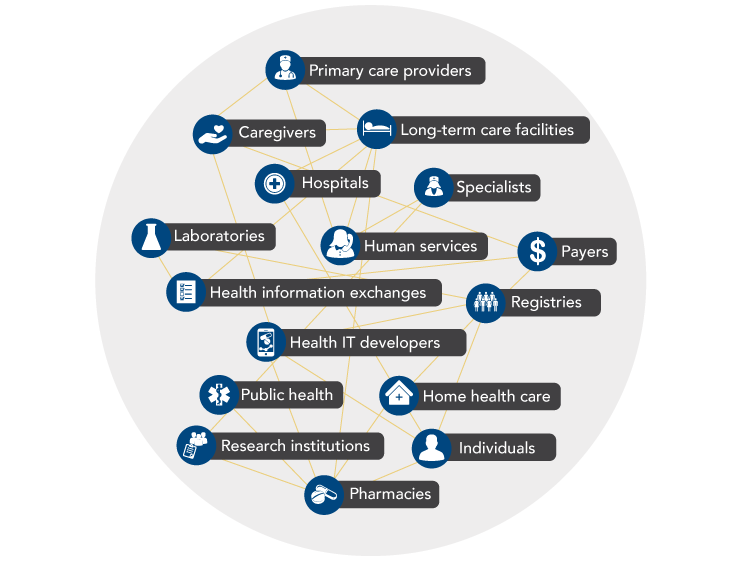

Objective 1: Enable interoperability among institutions and individuals that support care delivery across the cancer continuum, from prevention through treatment, survivorship, and end-of-life care.
Connected health is defined by the efficient and effective flow of information among all stakeholders. To accomplish this, health IT systems and software applications must be able to communicate with one another, exchange data, and use the information that has been exchanged. This high-level connectivity among systems is referred to as interoperability (see What Is Interoperability? ).[1] The potential benefits of interoperable connected health tools and systems are particularly great for oncology because the delivery of care across the cancer continuum depends on access to accurate and complete information, as well as extensive coordination among patients, caregivers, and diverse teams of providers.
What Is Interoperability?
Interoperability is the capacity of health IT systems and software applications to communicate, exchange data, and use the information that has been exchanged without special effort on the part of the user.
Source: Office of the National Coordinator for Health Information Technology. Connecting health and care for the nation: a shared nationwide interoperability roadmap. Washington (DC): ONC; 2015 Oct. Available from: https://www.healthit.gov/sites/default/files/hie-interoperability/nationwide-interoperability-roadmap-final-version-1.0.pdf
Creation of a nationwide interoperable health IT infrastructure was a central goal when the Office of the National Coordinator for Health Information Technology (ONC) was formed in 2004. Some progress in health information exchange has occurred over the past decade, in part spurred by the Health Information Technology for Economic and Clinical Health (HITECH) Act, the State Health Information Exchange Cooperative Agreement Program, and other initiatives and programs of ONC and the Centers for Medicare & Medicaid Services (CMS).[2-7] Despite this progress, widespread interoperability remains challenging in many contexts, hindering the ability of the healthcare workforce to deliver safe, effective, and timely patient- and family-centered care.
Action Item 1.1: Health IT stakeholder groups should continue to collaborate to overcome policy and technical barriers to a nationwide, interoperable health IT system.
Over the past few years, the urgency surrounding interoperability has grown, in part, because widespread adoption of EHRs and other health IT has increased the potential benefits of a fully connected system. In October 2015, the ONC released Connecting Health and Care for the Nation: A Shared Nationwide Interoperability Roadmap, which describes public- and private-sector actions that must be undertaken to realize the vision for a seamless health data system.[8] The Roadmap emphasizes the need for a healthcare payment and regulatory environment that incentivizes interoperability—namely, a shift from volume-driven to value-based payment for healthcare services. It also outlines several policy and technical components that must be in place to enable interoperability.
The federal government is addressing interoperability on multiple fronts. In April 2015, Congress declared it a national objective to achieve widespread exchange of health information through interoperable certified EHR technology nationwide by the end of 2018 (P.L. 114-10). Furthermore, CMS and ONC have emphasized that interoperability will be a high priority of a new incentive system that rewards Medicare providers for using technology to support improvements in clinical outcomes. ONC also has a number of initiatives and activities that address the various technical components of interoperability, including standards development and testing,[5,9-11] health IT certification,[6] and issues related to privacy and security.[12] The Department of Health and Human Services Office for Civil Rights recently published documents that clarify individuals’ rights to their health information under the Health Insurance Portability and Accountability Act Privacy Rule and provide guidance to organizations on how to adhere to privacy and security standards when exchanging data.[13]
Several private-sector and collaborative efforts focused on health information exchange and interoperability also are under way (see Private-Sector and Collaborative Interoperability Efforts). Numerous organizations have signaled their intent to promote interoperability by signing the ONC Interoperability Pledge (see ONC Interoperability Pledge).
Private-Sector and Collaborative Interoperability Efforts
- The Care Connectivity Consortium began in 2011 as an effort to facilitate health information exchange among the six founding healthcare systems and recently began making interoperability solutions available to the broader community.
- The Center for Medical Interoperability, formed in 2013 and led by healthcare systems, has created a technical lab to develop solutions to interoperability challenges. It plans to use the collective purchasing power of its members to drive development of health IT products that enable seamless information exchange.
- Several competing health IT vendors came together in 2013 to form the CommonWell Health Alliance, a trade association focused on developing interoperability solutions that can be embedded natively within health IT products.
- In August 2016, the interoperability framework developed by the public-private Carequality initiative went live. The framework—which provides the necessary legal terms, policy requirements, technical specifications, and governance processes to enable interoperability—has been adopted by 13 health organizations to date, and several others are in various stages of adoption and implementation planning.
Sources: Care Connectivity Consortium. Home page [Internet]. CCC; [cited 2016 Apr 4]. Available from: http://www.careconnectivity.org/; Center for Medical Interoperability. Home page [Internet]. Nashville (TN): the Center; [cited 2016 Apr 5]. Available from: http://medicalinteroperability.org/; CommonWell Health Alliance. Home page [Internet]. CommonWell Health Alliance; [cited 2016 Apr 4]. Available from: http://www.commonwellalliance.org/; Van Dyke D. Patient record sharing increases using Carequality interoperability framework [Press Release]. McLean (VA): The Sequoia Project; 2016 Aug 16. Available from: http://sequoiaproject.org/carequality-news/patient-record-sharing-increases-using-carequality-interoperability-framework/
ONC Interoperability Pledge
ONC has urged stakeholders to agree to three core commitments to improve the flow of health information to consumers and healthcare providers:
- Consumer Access: To help consumers easily and securely access their electronic health information, direct it to any desired location, learn how their information can be shared and used, and be assured that this information will be effectively and safely used to benefit their health and that of their community.
- No Blocking/Transparency: To help providers share individuals’ health information for care with other providers and their patients whenever permitted by law, and not block electronic health information (defined as knowingly and unreasonably interfering with information sharing).
- Standards: Implement federally recognized, national interoperability standards, policies, guidance, and practices for electronic health information, and adopt best practices, including those related to privacy and security.
As of September 2016, the pledge had been signed by EHR vendors that collectively provide 90 percent of hospital EHRs nationwide; numerous healthcare systems, including the five largest in the country with facilities in 47 states; and over a dozen health information exchanges, professional organizations, and advocacy groups.
Sources: Office of the National Coordinator for Health Information Technology. Interoperability pledge: what you can do [Internet]. Washington (DC): ONC; [cited 2016 Apr 6]. Available from: https://www.healthit.gov/commitment; U.S. Department of Health and Human Services. HHS announces major commitments from healthcare industry to make electronic health records work better for patients and providers [Press Release]. Washington (DC): DHHS; 2016 Feb 29 [cited 2016 Mar 22]. Available from: http://www.hhs.gov/about/news/2016/02/29/hhs-announces-major-commitments-healthcare-industry-make-electronic-health-records-work-better.html
The Panel is encouraged by widespread support for and attention to health IT interoperability, an indispensable component of connected health for cancer. All public- and private-sector health IT stakeholder groups, including government agencies, healthcare systems, providers, laboratories, standards development organizations, and health IT developers, should work cooperatively to achieve interoperability as quickly as possible, with the ultimate goal of optimizing the flow of information to serve the needs of patients, caregivers, and providers. In addition to addressing technical aspects of interoperability, stakeholders should enact policies and foster cultures that promote collaboration and do not allow information blocking, which interferes with the effective and efficient flow of information (see Information Blocking).
Information Blocking
There have been assertions that some healthcare systems, hospitals, and health IT vendors knowingly and unreasonably interfere with the exchange or use of electronic health information. This conduct is referred to as information blocking. Examples of information blocking include developing or implementing technology in non-standard ways likely to substantially increase the costs, complexity, or burden of sharing health information; refusing to share information or establish connections with competitors; charging prohibitive fees for data exchange that have no relation to costs; using contract terms or policies to limit data sharing; or refusing to transmit data where an individual directs it, as is required by law. These behaviors are inconsistent with the principles of connected health and undermine delivery of high-quality, patient-centered care.
Sources: Black P, Kendrick DC, Kibbe DC, Mirro MJ. Testimony. Presented at: Achieving the promise of health information technology: information blocking and potential solutions (full committee hearing of the U.S. Senate committee on Health, Education, Labor, and Pensions); 2015 Jul 23; Washington, DC. Available from: http://www.help.senate.gov/hearings/achieving-the-promise-of-health-information-technology-information-blocking-and-potential-solutions; Allen A. Connecticut law bans EHR-linked information blocking. Politico.com [Internet]. 2015 Oct 30 [cited 2016 Apr 9]. Available from: http://www.politico.com/story/2015/10/connecticut-law-bans-ehr-linked-information-blocking-215400; HIMSS Electronic Health Record Association. Letter to: Office of the National Coordinator for Health Information Technology. 2015 Sep 25. Available from: http://www.himssehra.org/docs/EHRA%20Information%20Blocking%20Response%20Letter.pdf; American Society of Clinical Oncology. Barriers to interoperability and information blocking. Alexandria (VA): ASCO; 2015. Available from: http://www.asco.org/sites/www.asco.org/files/position_paper_for_clq_briefing_09142015.pdf; Office of the National Coordinator for Health Information Technology. Report on health information blocking [Report to Congress]. Washington (DC): ONC; 2015 Apr. Available from: http://www.healthit.gov/sites/default/files/reports/info_blocking_040915.pdf
Action Item 1.2: Technical standards for information related to cancer care across the continuum should be developed, tested, disseminated, and adopted.
Health IT systems across the country currently use a variety of technical procedures, formats, and vocabularies, so healthcare organizations often cannot use automated processes to recognize, process, and interpret data from external sources. A set of common technical standards for health IT systems would facilitate more efficient and effective data sharing and integration. The President’s Cancer Panel supports ONC’s assertion in the 2015 Roadmap that common technical standards must be developed, widely deployed, and iteratively improved.[8] Development could be carried out through standards development organizations or open-source processes. In particular, standards for cancer-related information are needed to fully realize the benefits of health IT interoperability for cancer care across the continuum.
Until recently, no such standards existed. The American Society of Clinical Oncology (ASCO)—in collaboration with interoperability experts and the healthcare-focused standards development organization HL7—has begun developing an oncology-specific EHR standard designed to improve coordination and quality of care for cancer patients. Initial work on the standard, called Clinical Oncology Treatment Plan and Summary (COTPS), focused on data elements needed for preparation of treatment planning and summary documents to support communication and coordination of care during and after treatment for early-stage breast cancer and colon cancer.[14] COTPS is listed in the ONC Interoperability Standards Advisory,[5] and ASCO currently is integrating its survivorship care plan into COTPS.[15] In addition to supporting cancer care, cancer-related standards will help improve surveillance and research. Oncology-specific standards will support creation of learning healthcare systems for cancer (see Action Item 5.1). The Centers for Disease Control and Prevention and its partners made use of COTPS when they developed guidance for reporting by ambulatory healthcare providers to cancer registries (see Action Item 5.2 ).[16]
The Panel lauds the work of ASCO as a critical first step in developing oncology-specific standards. However, more must be done to develop and disseminate technical standards for information related to cancer prevention and care. COTPS should be expanded to include disease-specific information for additional cancer types. Furthermore, standards for cancer screening and factors that influence cancer risk and outcomes—including genomic, environmental, and lifestyle factors—must be developed and used. Patient care also would benefit if patient-reported outcomes were validated and then collected in standardized ways. Health IT vendors and healthcare organizations should adopt and use standards for cancer-related information. Current and emerging oncology standards should be evaluated in real-world practice and refined to optimize their value for providers and patients.
Action Item 1.3: Standard, open API platforms should be developed and used to facilitate development of cancer-related apps.
One approach to health IT interoperability that has garnered enthusiasm is the use of application programming interfaces, or APIs, to provide access to data and facilitate development of apps and other interfaces (see What Is an API? ). APIs underlie the success of the app market for mobile devices, enabling development of novel, diverse, high-quality apps by an almost unlimited number of third parties. Implementation of APIs by EHRs and other health IT products would open up a health app marketplace capable of catering to the specialized needs of a variety of users and adapting quickly to changes to the healthcare system. Within the context of connected health for cancer, APIs would enable development of customized, cancer-specific tools and interfaces with potential to support patients’ access to and control of their health information (see Objective 2 ) and enhance providers’ workflow (see Objective 3 ).
What Is an API?
APIs, or application programming interfaces, let health IT developers know what information they can request from a database or system (such as an EHR), as well as how to ask for and receive that information. Using APIs, health IT developers can develop apps and other software products that display and/or use health data in ways that meet users’ needs. Once developed, an API-based app can be used interchangeably with any system that uses the same API. API-based apps also could integrate information from multiple sources, including multiple EHRs and other types of sources.
![This graphic illustrates how an API can facilitate information exchange between an app and EHR systems. Two computer monitors labeled “EHR 1” and “EHR 2” are on the left side of the graphic. Two-sided arrows link each monitor with a rectangle labeled “API.” On the right side of the API rectangle is a two-sided arrow connecting the API rectangle to an app. The following statements are included in the graphic:
“APIs can facilitate interoperability by integrating data from multiple sources.”
“APIs allow developers to access and use data from databases or systems, such as EHRs.”](img/Figures/Final/sidebar4w.png "What Is an API?")
Source: Patterson M. What is an API, and why does it matter? [Internet]. Chicago (IL): Sprout Social; 2015 Apr 3 [cited 2016 Sep 8]. Available from: http://sproutsocial.com/insights/what-is-an-api/
A pair of reports from JASON, an independent group of scientists that advises the U.S. government on matters of science and technology, identified standard, open APIs as a critical need in health IT.[17,18] The ONC Roadmap also calls for development and use of a limited number of APIs,[8] and the 2015 Edition Health IT Certification Criteria includes a requirement that health IT developers use and publish APIs that permit third parties to request and receive certain types of data.[6] The Joint ONC Federal Advisory Committee recently examined privacy and security concerns related to APIs and concluded that, when appropriately managed, the potential benefits of APIs outweigh the risks.[19] EHR vendors are warming to the idea of APIs. Several companies and healthcare organizations support the Argonaut Project, a collaborative effort to implement the API specification based on the Fast Healthcare Interoperability Resources (FHIR) and Substitutable Medical Applications and Reusable Technology (SMART) on FHIR standard to expand access to EHR data via API.[20,21]
The Panel supports the API requirement in ONC health IT certification criteria and is encouraged by progress in API development and support for API use. To further expedite API-driven health IT interoperability, the Panel urges continued development and testing of APIs and eventual adoption of standard, open API platforms for health IT. As stated in the ONC Roadmap, simply publishing APIs is not enough; there must also be a limited number of standard APIs to reduce complexity.[8]
References
- Health Information and Management Systems Society. What is interoperability? [Internet]. Chicago (IL): HIMSS; [cited 2016 Sep 29]. Available from: http://www.himss.org/library/interoperability-standards/what-is-interoperability
- The Sequoia Project. About eHealth Exchange [Internet]. McLean (VA): The Sequoia Project; [cited 2016 Apr 4]. Available from: http://sequoiaproject.org/ehealth-exchange/about/
- Office of the National Coordinator for Health Information Technology. State health information exchange: HIE bright spots [Internet]. Washington (DC): ONC; [updated 2015 Mar 27; cited 2016 May 10]. Available from: https://www.healthit.gov/policy-researchers-implementers/hie-bright-spots
- Dullabh P, Parashuram S, Hovey L, Ubri P, Fischer K. Evaluation of the State HIE Cooperative Agreement Program: final report. Bethesda (MD): National Opinion Research Center at the University of Chicago; 2016 Mar. Available from: https://www.healthit.gov/sites/default/files/reports/finalsummativereportmarch_2016.pdf
- Office of the National Coordinator for Health Information Technology. 2016 interoperability standards advisory. Washington (DC): ONC; 2016. Available from: https://www.healthit.gov/sites/default/files/2016-interoperability-standards-advisory-final-508.pdf
- U.S. Department of Health and Human Services. 2015 Edition Health Information Technology (Health IT) Certification Criteria, 2015 Edition Base Electronic Health Record (EHR) Definition, and ONC Health IT Certification Program Modifications. Fed Regist. 2015 Oct 16;80(200):62602-759. Available from: https://www.federalregister.gov/articles/2015/10/16/2015-25597/2015-edition-health-information-technology-health-it-certification-criteria-2015-edition-base
- Slavitt A, DeSalvo K. Bridging the healthcare digital divide: improving connectivity among Medicaid providers. The CMS Blog [Internet]. 2016 Mar 2. Available from: https://blog.cms.gov/2016/03/02/bridging-the-healthcare-digital-divide-improving-connectivity-among-medicaid-providers/
- Office of the National Coordinator for Health Information Technology. Connecting health and care for the nation: a shared nationwide interoperability roadmap. Washington (DC): ONC; 2015 Oct. Available from: https://www.healthit.gov/sites/default/files/hie-interoperability/nationwide-interoperability-roadmap-final-version-1.0.pdf
- Office of the National Coordinator for Health Information Technology. The Standards Exploration Award (SEA) cooperative agreement program [Internet]. Washington (DC): ONC; [updated 2016 May 9; cited 2016 May 12]. Available from: https://www.healthit.gov/techlab/pilots/standards-exploration-awards
- Office of the National Coordinator for Health Information Technology. The High Impact Pilots (HIP) cooperative agreement program [Internet]. Washington (DC): ONC; [updated 2016 May 9; cited 2016 May 12]. Available from: https://www.healthit.gov/techlab/pilots/high-impact-pilots
- Office of the National Coordinator for Health Information Technology. Structured Data Capture (SDC) [Internet]. Washington (DC): ONC; [updated 2016 May 31; cited 2016 Sep 14]. Available from: https://www.healthit.gov/policy-researchers-implementers/structured-data-capture-sdc
- Office of the National Coordinator for Health Information Technology. Health IT privacy and security resources [Internet]. Washington (DC): ONC; [updated 2016 Feb 12; cited 2016 May 13]. Available from: https://www.healthit.gov/providers-professionals/ehr-privacy-security/resources
- Office for Civil Rights. Health information technology [Internet]. Washington (DC): U.S. Department of Health and Human Services; [cited 2016 Aug 26]. Available from: http://www.hhs.gov/hipaa/for-professionals/special-topics/health-information-technology/index.html
- Warner JL, Maddux SE, Hughes KS, Krauss JC, Yu PP, Shulman LN, et al. Development, implementation, and initial evaluation of a foundational open interoperability standard for oncology treatment planning and summarization. J Am Med Inform Assoc. 2015;22(3):577-86. Available from: http://www.ncbi.nlm.nih.gov/pubmed/25604811
- American Society of Clinical Oncology. Cancer-specific standards [Internet]. Alexandria (VA): ASCO; [cited 2016 Sep 7]. Available from: https://www.asco.org/practice-guidelines/quality-guidelines/health-it-work-group/cancer-specific-standards
-
National Center for Chronic Disease Prevention and Health Promotion, Division of Cancer Prevention and Control. Implementation guide for ambulatory healthcare provider reporting to central cancer registries: HL7 clinical document architecture (CDA). Atlanta (GA): Centers for Disease Control and Prevention; 2014 Mar. Available from: http://www.cdc.gov/phin/resources/guides/documents/implementation_guide_for_
ambulatory_healthcare_provider_reporting_to_central_cancer_registries_march_2014.pdf - JASON. A robust health data infrastructure. McLean (VA): The MITRE Corporation; 2013 Nov. Available from: https://www.healthit.gov/sites/default/files/ptp13-700hhs_white.pdf
- JASON. Data for individual health. McLean (VA): The MITRE Corporation; 2014 Nov. Available from: https://healthit.ahrq.gov/sites/default/files/docs/publication/2014-jason-data-for-individual-health.pdf
- Health IT Joint Committee Collaboration. Application Programming Interface (API) Task Force recommendations. Washington (DC): Office of the National Coordinator for Health Information Technology; 2016 Jul 8. Available from: https://www.healthit.gov/facas/sites/faca/files/API%20TF_Recommendations_Final%2007-08-2016.pdf
- The Argonaut Project: project charter. 2015 Dec 4. Available from: http://mycourses.med.harvard.edu/ec_res/nt/6209858F-CDDD-4518-ADF8-F94DF98B5ECF/Argonaut_Project-12_Dec_2014-v2.pdf
- Mandel JC, Kreda DA, Mandl KD, Kohane IS, Ramoni RB. SMART on FHIR: a standards-based, interoperable apps platform for electronic health records. J Am Med Inform Assoc. 2016;23(5):899-908. Available from: http://www.ncbi.nlm.nih.gov/pubmed/26911829